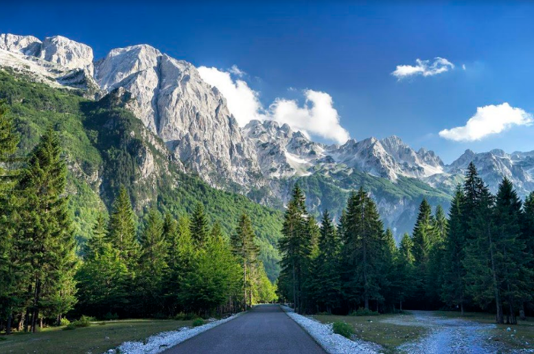
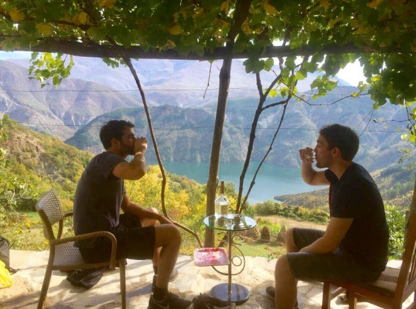

Alps Tour
For 2 nights and 3 days, this eco and cultural tour will take you through lake Komani,
to freshest rivers, remote villages and steep mountains, and give you insights into local culture and history.
Our adventure will start early in the morning. Expect two hours traveling by bus up the mountains to Komani.
At 9:30 the boat tour starts, taking you 2 hours through a wild alpine scenery, including stops for swimming.
Arriving in shala river with the critical water, eating local food drinking rakia and other local stuff
In the afternoon heading to the remote village for sleeping in cosy atmosphere of Highland.
the next morning after a traditional breakfast taking the boat to fireza.


Upon arrival, a bus will take you to Valbona valley, where local folks at the guesthause will await you with lunch ready.
In the afternoon, the nearby mountain river is the perfect spot for swimming, jumping, relaxing and taking pictures.
Following this, traditional foods will be served for dinner, including wine, rakia, and other local drinks.
After dinner, we finish the day by sitting around the fireplace, and listening to the history and fairytales of the region.
Next day, breakfast will be served at the guest house early for a good start to 6 hours hiking from valbona to theth.
But don't worry, after 3 hours we will reach the peak and have lunch there (which we have to carry up ourselves, but which is prepared by guesthause).
After the lunch, the hike goes down to theth for 3 hours.
Finally arriving in Theth, guesthause awaits you.
The nearby waterfall, the 'blue eye' canyon, an old church and the local museum (placed directly on a rock)
are interesting spots which we will spend our afternoon with (possible to do it the next day depending on the mood of travelers).
At the guesthause we will have the dinner and after dinner time for gazing into the sky to see falling stars and the milky way (which is amazingly bright given the lack of 'light pollution' by cities).
The 4th day we will return to Shkodra by bus. Around noon for almost 3 hours drive to shkoder.

All this tour will cost 260€ including
-transport by bus to komani,
-boat tour,
-lunch in shala river (koman)
-accomodation and food (koman)
-bus to valbona,
-lunch at the guesthause,
-guide around the valley,
-dinner, bed, breakfast and picnic lunch in valbona,
-guide to old church and museum,
-dinner, bed and breakfast in Theth,
-transport by bus from theth to shkodra).